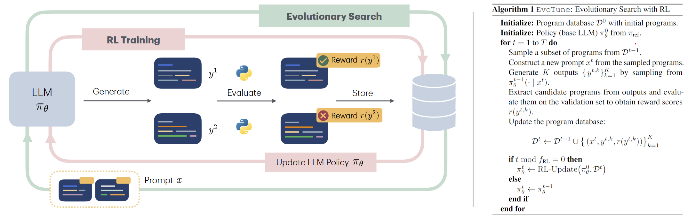
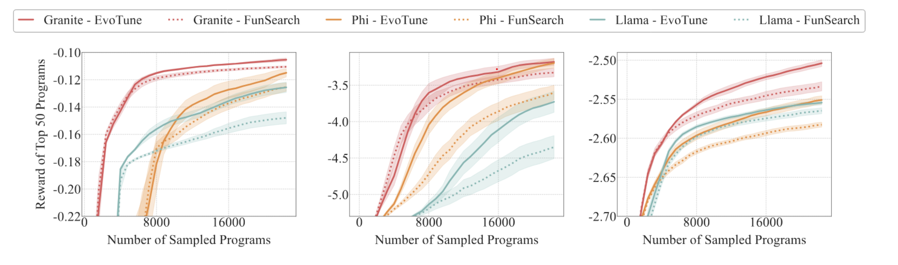
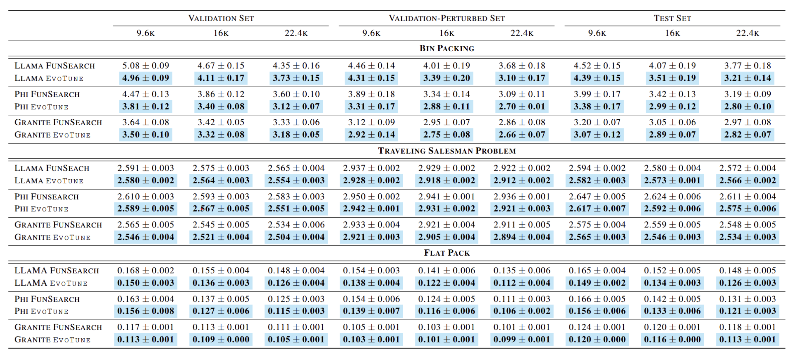

Romera-Paredes, B., Barekatain, M., Novikov, A., Balog, M., Kumar, M. P., Dupont, E., ... & Fawzi, A. (2024). Mathematical discoveries from program search with large language models. Nature, 625 (7995), 468–475. https://www.nature.com/articles/s41586-023-06924-6
Method Overview
 Figure 1: The EvoTune framework. Candidate programs are generated by prompting the model with previously discovered successful programs. Newly generated programs are evaluated and stored in a program database. The LLM is periodically fine-tuned based on these discoveries to improve future generations.Efficient algorithm design is central to solving scientific challenges, yet discovering new algorithms remains a complex and largely manual process. Recently, large language models (LLMs) have emerged as powerful tools capable of reasoning about problems and generating code. This has opened up new opportunities for automating algorithm design, particularly when combined with evolutionary search strategies that iteratively improve candidate solutions. LLM-guided evolutionary search methods like FunSearch [Romera-Paredes et al., 2024] have shown strong results in problems ranging from mathematical discovery to robotics and programming. However, current methods treat the LLM as a static generator, overlooking its potential to more directly learn from the signal generated by the search process.
This paper introduces a novel approach that couples evolutionary search with reinforcement learning (RL) to continuously train the LLM during the search. By leveraging feedback from evolutionary exploration, the LLM is fine-tuned to better navigate the algorithmic search space over time. This synergy between search and learning aligns with the “Bitter Lesson” in AI, highlighting the power of combining search and learning. The proposed method, EvoTune, refines the LLM policy based on the evaluation score of the programs discovered, leading to more efficient algorithm discovery.
EvoTune operates in two alternating phases. First, in the evolutionary search phase, a prompt is constructed by sampling from existing high-performing programs stored in a program database. The LLM policy \( \pi_{\theta} \) then generates new candidate programs, each of which is evaluated on problem instances and assigned a reward score based on its quality. Successful candidates are added to the program database. Periodically, the model switches to the reinforcement learning fine-tuning phase. Here, the LLM policy is updated using "online" Direct Preference Optimization (DPO), leveraging pairwise comparisons from stored programs to teach the model how to find higer-reward regions of the search space and what kinds of transformations lead to better performance. By integrating RL training into the evolutionary search process, the model gains a better understanding of the search space and therefore performs better-targeted search at subsequent iterations.
Experiments
We evaluate EvoTune on three combinatorial optimization tasks: bin packing, traveling salesman, and the flatpack problem. For each task, the goal is to discover heuristic programs that minimize the optimality gap (equivalently, maximize the reward score). We compare against static LLM baseline FunSearch, which uses only evolutionary search without training the LLM. All results are averaged over ten random seeds to account for variability.

Figure 2: Reward score trajectories of the top 50 generated programs for FlatPack (left), Bin Packing (middle), and Traveling Salesman Problem (right). Shaded areas denote standard error across 10 seeds. EvoTune consistently attains higher top-50 rewards towards the end of the sampling budget, demonstrating its superior search efficiency compared to the baseline.
The figure above shows how the reward score of the best 50 discovered programs improve as more programs are sampled. Across all evaluated models and tasks, EvoTune accelerates the discovery of best-perfroming programs that achieive the highest scores. Notably, the performance gap between EvoTune and the baseline tends to widen with larger sampling budgets.

Table 1: Results for Bin Packing (top), Traveling Salesman Problem (middle), and FlatPack (bottom). We report mean optimality gaps of the top 50 programs and standard errors across 10 seeds on validation, perturbed-validation, and test sets at three sampling budgets (9.6k, 16k and 22k sampled programs). Across all tasks and models, EvoTune consistently achieves the best results (highlighted in blue).
We evolve programs based on the score from the validation set of problem instances. To further assess the robustness and generalization of the generated programs, we evaluate their performance on the validation-perturbed and test sets. As shown in the table above, our method outperforms the baseline across all tasks and models.
Training the LLM can reduce the diversity of its generated outputs, which poses a challenge since evolutionary search critically depends on maintaining diversity. To address this, we paid special attention to preserving diversity during training. For example, we found that using forward KL regularization was effective, full details are provided in the paper. To further support diverse exploration, we use an island-based approach in the program database, where different groups of programs (or “islands”) evolve independently. As shown in the figure below, this strategy leads to structured clusters of programs that gradually diverge from the initial seed as the sampling budget increases. Programs within the same island tend to display greater semantic similarity compared to those across different islands.

Figure 3: t-SNE visualizations of program embeddings produced by EvoTune across three tasks (bin packing, traveling salesman problem, flatpack), using representations from a pre-trained NeoBERT encoder. In the top rows, programs are colored by their assigned island in the program database; in the bottom rows, coloring reflects the timestep of their discovery. For each task, programs are taken from the best-performing model and seed.
EvoTune in Action
To illustrate how EvoTune works in practice, we showcase the evolution of the best performing programs, revealing how solutions emerge and improve. We also show the progression of score distributions of programs within the program database. Initially, the score distributions of EvoTune and the baseline are similar. However, as the search progresses, EvoTune generates a larger number of high-quality solutions as reflected by the larger increase in the lower optimality gap region. This highlights EvoTune’s ability to more effectively explore the solution space and accelerate the discovery of best-performing programs.
Bin Packing
Evolution of the best-performing program over multiple rounds
Evolution of program score distributions across rounds
Travelling Salesman Problem
Evolution of the best-performing program over multiple rounds
Evolution of program score distributions across rounds
FlatPack Problem
Evolution of the best-performing program over multiple rounds
Evolution of program score distributions across rounds